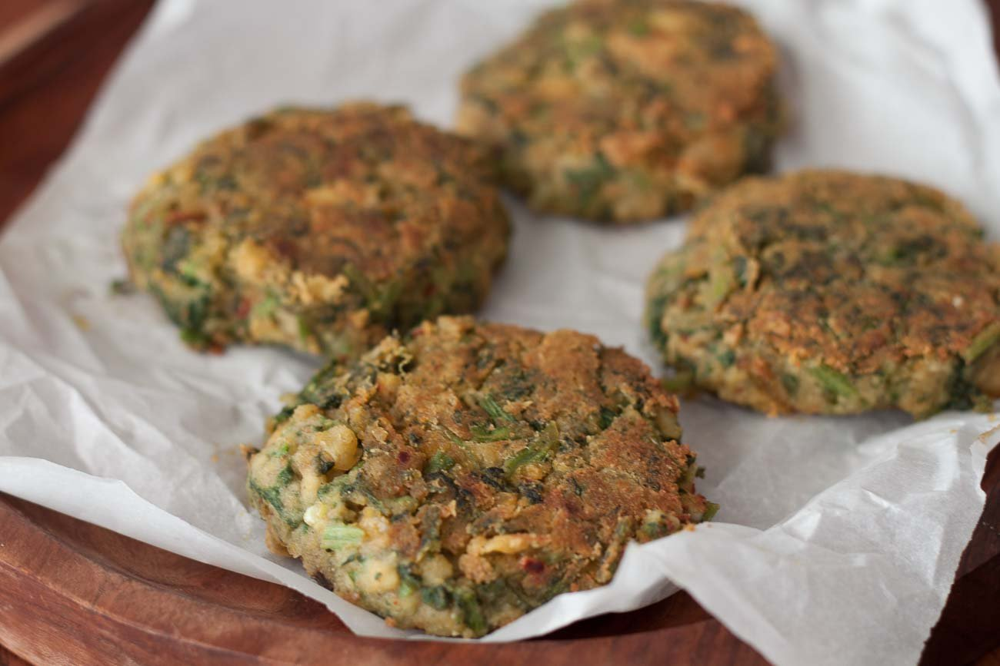

Chickpea and Spinach fritters
Description
Chickpea and spinach fritters Recipe is a high protein healthy snack made from a blend of green leaf and lentil. The fritter is very soft and melts in your mouth and is seasoned perfectly with the right flavors.
You can also make the mixture into Kofta shapes and fry them in a Kuzhi Paniyaram pan as well.
Ingredients
- 1 cup Kabuli Chana (White Chickpeas) , drained, rinsed and roughly chopped
- 1 cup Spinach Leaves (Palak)
- 1/4 cup Corn flour
Steps
- We begin making the Chickpea and spinach fritters Recipe by soaking the chickpeas for 8 hours and then pressure cooking it in a pressure cooker for about half an hour till it is soft.
- Let the pressure release naturally, and strain the water and grind the chickpea to a very coarse mixture.
- Then boil the spinach in a sauce pan with little water and strain all the water. Add this boiled spinach to the coarsely ground chickpea. Season it with the rest of the ingredients.
- Make into medium sized fritter, and heat a flat tawa and fry till is golden brown either side, make sure you turn them carefully as they are very soft. Keep adding a teaspoon oil to give it a nice crispy layer.
Back to Top
Back to Homepage